Câu 53 TOPIK II
Câu 53 = mô tả biểu đồ trong 200–300 chữ. Phần số liệu em ghép vào khung câu có sẵn. Phần nguyên nhân, triển vọng, phương án đề chỉ cho mảnh rút gọn — em phải tự thêm tiểu từ và động từ. Trang này dạy cả hai, có bài luyện chấm ngay. Bài làm tự lưu trên máy em.
📖 Đọc mẫu trước giờ thi: 21 đề nguyên nhân · triển vọng · phương án, mỗi đề có câu mẫu để đọc to.
Khung câu · 10 dạng của câu 53
Mỗi bảng là một câu: mỗi ô là một phần của câu, tô màu theo vai trò (thời gian, con số, mức độ, động từ…). Học thuộc khung, đi thi chỉ việc thay số. Chọn dạng ở hàng nút bên dưới. Phần nguyên nhân (Dạng 7) và dự đoán (Dạng 8) học kỹ ở Buổi 2, Buổi 3.
Dạng 1 — Bảng ô khung câu
So sánh 2 mốc thời gian — mỗi ô là 1 thành phần của câu, tô màu theo vai trò. Tách riêng bảng TĂNG và bảng GIẢM.
Dạng 1 — So sánh 2 mốc thời gian (두 시점을 비교할 때): Theo dõi 1 đối tượng ở 2 thời điểm. Đây là công thức cơ bản nhất, nền tảng cho các dạng khác.
Nhận diện bằng hình dạng biểu đồ: chỉ cần đếm được đúng 2 mốc thời gian (2 năm) và 1 đối tượng duy nhất — biểu đồ có thể là đường (nối 2 điểm bằng 1 đường, thường có mũi tên hoặc nhãn tỉ lệ ở giữa) hoặc cột (2 cột đứng cạnh nhau, mỗi cột 1 năm). Dù là đường hay cột, chỉ cần đúng 2 mốc và 1 đối tượng là dùng được khung Dạng 1.
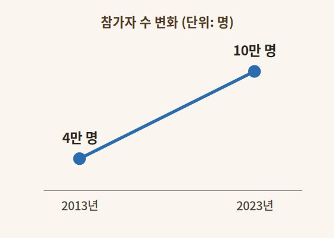
참가자 수 변화 (2013년 → 2023년) — 1 đường nối đúng 2 điểm, có nhãn số ở mỗi điểm, 2 mốc năm.
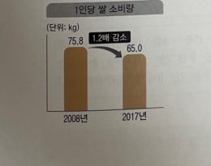
폐암 발생률 (2010년 → 2020년) — 2 cột đứng cạnh nhau, mỗi cột 1 mốc năm, có nhãn số phía trên cột.
📌 Chú thích cột [Mức độ] — trường hợp nào dùng từ nào?
| Từ vựng (Hàn) | Khi nào dùng | Nghĩa tiếng Việt |
|---|---|---|
| 약 ○배 | Khi đề bài cho sẵn tỉ lệ cụ thể — gấp bao nhiêu lần giữa 2 số liệu (VD: 4만 → 21만 ≈ 5배) | khoảng ○ lần |
| 꾸준히 | Khi số liệu tăng/giảm đều đặn, ổn định qua suốt cả giai đoạn, không có tỉ lệ nổi bật | đều đặn, liên tục |
| 대폭 | Khi mức tăng/giảm rất mạnh, rõ rệt, gây chú ý (thường dùng khi không có số % chính xác) | mạnh, nhiều, đáng kể |
| 소폭 | Khi mức tăng/giảm nhẹ, ít, gần như không đáng kể so với tổng thể | nhẹ, ít, không đáng kể |
| Năm 1 | 년에 | Số 1 | , | Năm 2 | 년에는 | Số 2 | (으)로 | Khoảng thời gian |
만에 | [Cột mức độ] (xem chú thích) |
증가한 것으로 나타났다. |
Từ đồng nghĩa thay thế 증가하다: 늘어나다 (tăng lên, nhiều lên) · 상승하다 (tăng, đi lên) · 오르다/올라가다 (tăng lên) · 늘다 (tăng) · 확대되다 (mở rộng, tăng thêm)
| 2010 | 년에 | 5만 1천 명 | , | 2020 | 년에는 | 31만 명 | (으)로 | 10년 | 만에 | 약 6배 | 증가한 것으로 나타났다. |
Ví dụ đã điền: Vào năm 2010 là 5 vạn 1 nghìn người, đến năm 2020 là 31 vạn người, sau 10 năm đã tăng khoảng 6 lần.
CÂU GIẢM| Năm 1 | 년에 | Số 1 | , | Năm 2 | 년에는 | Số 2 | (으)로 | Khoảng thời gian |
만에 | [Cột mức độ] (xem chú thích) |
감소한 것으로 나타났다. |
Từ đồng nghĩa thay thế 감소하다: 줄어들다 (giảm xuống, ít đi) · 하락하다 (giảm, đi xuống) · 내려가다/떨어지다 (giảm xuống, rơi xuống) · 줄다 (giảm) · 축소되다 (thu hẹp, giảm bớt quy mô)
| 2008 | 년에 | 75.8kg | , | 2017 | 년에는 | 65.0kg | (으)로 | 9년 | 만에 | 약 1.2배 | 감소한 것으로 나타났다. |
Ví dụ đã điền: Vào năm 2008 là 75,8kg, đến năm 2017 là 65,0kg, sau 9 năm đã giảm khoảng 1,2 lần.
Dạng 2 — Bảng ô khung câu
So sánh 3 mốc thời gian trở lên — theo dõi 1 đối tượng, xử lý theo hình dạng đường biểu diễn.
Dạng 2 — So sánh 3 mốc thời gian (세 시점을 비교할 때): Theo dõi 1 đối tượng qua 3 mốc trở lên. Khác Dạng 1, ở đây phải xử lý theo hình dạng đường biểu diễn — có 3 Kiểu tùy vào xu hướng tăng/giảm.
Nhận diện bằng hình dạng biểu đồ: luôn là 1 đường (hoặc dãy cột) nối từ 3 điểm trở lên. Nhìn hướng đi của đường để xác định đúng Kiểu: đi lên/xuống liên tục → Kiểu A; đổi chiều 1 lần → Kiểu B; đổi chiều 2 lần (4 mốc) → Kiểu C.
Đường đi 1 chiều duy nhất từ đầu đến cuối, không đổi hướng — chỉ tăng dần hoặc chỉ giảm dần qua cả 3 mốc.
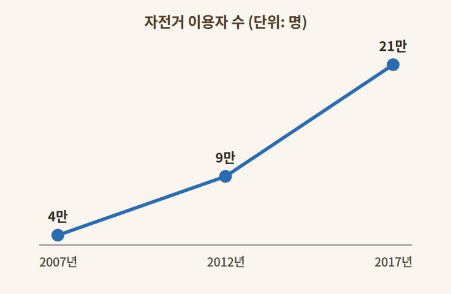
자전거 이용자 수 (2007 → 2012 → 2017) — đường đi lên liên tục suốt 3 mốc, không đổi chiều.
| Năm 1 | 년에 | Số 1 | 에서, | Năm 2 | 년에는 | Số 2 | , | Năm 3 | 년에는 | Số 3 | (으)로 | Khoảng thời gian |
만에 | [Cột mức độ] (xem chú thích) |
증가한 것으로 나타났다. |
| 2007 | 년에 | 4만 명 | 에서, | 2012 | 년에는 | 9만 명 | , | 2017 | 년에는 | 21만 명 | (으)로 | 10년 | 만에 | 약 5배 | 증가한 것으로 나타났다. |
Ví dụ đã điền: Từ 4 vạn người (2007), 9 vạn người (2012), đến 21 vạn người (2017), sau 10 năm đã tăng khoảng 5 lần.
GIẢM LIÊN TỤC| Năm 1 | 년에 | Số 1 | 에서, | Năm 2 | 년에는 | Số 2 | , | Năm 3 | 년에는 | Số 3 | (으)로 | Khoảng thời gian |
만에 | [Cột mức độ] (xem chú thích) |
감소한 것으로 나타났다. |
| 2000 | 년에 | 50만 명 | 에서, | 2010 | 년에는 | 35만 명 | , | 2020 | 년에는 | 20만 명 | (으)로 | 20년 | 만에 | 꾸준히 | 감소한 것으로 나타났다. |
Ví dụ đã điền: Từ 50 vạn người (2000), 35 vạn người (2010), xuống 20 vạn người (2020), sau 20 năm đã giảm đều đặn, liên tục.
📌 Chú thích cột [Mức độ] — trường hợp nào dùng từ nào?
| Từ vựng (Hàn) | Khi nào dùng | Nghĩa tiếng Việt |
|---|---|---|
| 약 ○배 | Khi đề bài cho sẵn tỉ lệ cụ thể — gấp bao nhiêu lần giữa mốc đầu và mốc cuối | khoảng ○ lần |
| 꾸준히 | Khi số liệu tăng/giảm đều đặn, ổn định qua suốt cả giai đoạn, không có tỉ lệ nổi bật | đều đặn, liên tục |
| 대폭 | Khi mức tăng/giảm rất mạnh, rõ rệt, gây chú ý | mạnh, nhiều, đáng kể |
Từ đồng nghĩa 증가하다: 늘어나다 · 상승하다 · 오르다/올라가다 · 늘다 · 확대되다 | Từ đồng nghĩa 감소하다: 줄어들다 · 하락하다 · 내려가다/떨어지다 · 줄다 · 축소되다
Đường đi đổi chiều đúng 1 lần — từ mốc 1 đến mốc 2 đi một hướng, từ mốc 2 đến mốc 3 đổi sang hướng ngược lại.
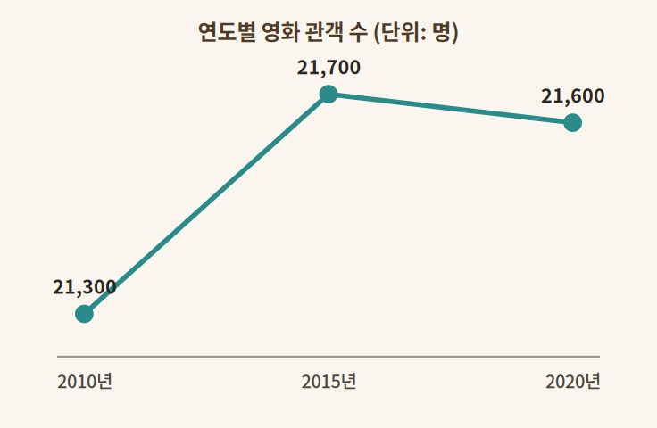
연도별 영화 관객 수 (2010 → 2015 → 2020) — tăng đến giữa rồi giảm nhẹ ở mốc cuối, đổi chiều đúng 1 lần.
| Năm 1 | 년에 | Số 1 | 에서, | Năm 2 | 년에는 | Số 2 | (으)로 | 증가하다가 | , | Năm 3 | 년에는 | Số 3 | (으)로 | 감소하였다. |
| 2010 | 년에 | 21,300명 | 에서, | 2015 | 년에는 | 21,700명 | (으)로 | 증가하다가 | , | 2020 | 년에는 | 21,600명 | (으)로 | 감소하였다. |
Ví dụ đã điền: Từ 21.300 người (2010), tăng lên 21.700 người (2015), rồi đến 2020 lại giảm xuống 21.600 người.
GIẢM RỒI TĂNG| Năm 1 | 년에 | Số 1 | 에서, | Năm 2 | 년에는 | Số 2 | (으)로 | 감소하다가 | , | Năm 3 | 년에는 | Số 3 | (으)로 | 증가하였다. |
| 2015 | 년에 | 120잔 | 에서, | 2018 | 년에는 | 90잔 | (으)로 | 감소하다가 | , | 2021 | 년에는 | 150잔 | (으)로 | 증가하였다. |
Ví dụ đã điền: Từ 120 cốc (2015), giảm xuống 90 cốc (2018), rồi đến 2021 lại tăng lên 150 cốc.
Cụm chuyển tiếp thay thế 증가하다가: 늘어나다가 · 상승하다가 · 올라가다가 | Cụm chuyển tiếp thay thế 감소하다가: 줄어들다가 · 하락하다가 · 떨어지다가
Có 4 mốc thời gian, đường đi đổi chiều 2 lần — viết thành 2 câu, câu 2 bắt đầu bằng "그러나" (tuy nhiên).
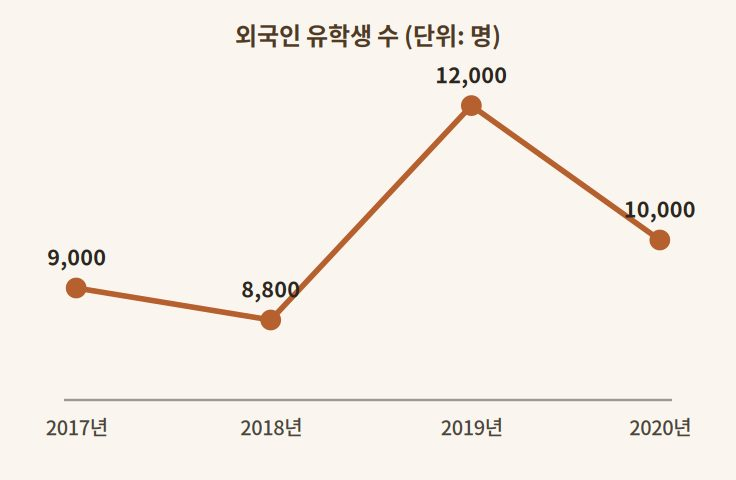
외국인 유학생 수 (2017 → 2018 → 2019 → 2020) — giảm, rồi tăng vọt, rồi lại giảm — đổi chiều đúng 2 lần.
| Năm 1 | 년에 | Số 1 | 에서, | Năm 2 | 년에는 | Số 2 | (으)로 | 증가하였다. | |||
| 그러나 | Năm 3 | 년에는 | Số 3 | (으)로 | 감소했다가 | Năm 4 | 년에는 | 다시 | Số 4 | (으)로 | 증가하였다. |
| 2015 | 년에 | 5,000명 | 에서, | 2017 | 년에는 | 8,000명 | (으)로 | 증가하였다. | |||
| 그러나 | 2019 | 년에는 | 6,000명 | (으)로 | 감소했다가 | 2021 | 년에는 | 다시 | 9,000명 | (으)로 | 증가하였다. |
Ví dụ đã điền: Từ 5.000 người (2015) tăng lên 8.000 người (2017). Tuy nhiên đến 2019 lại giảm xuống 6.000 người, rồi đến 2021 lại tăng trở lại 9.000 người.
GIẢM - TĂNG - GIẢM| Năm 1 | 년에 | Số 1 | 에서, | Năm 2 | 년에는 | Số 2 | (으)로 | 감소하였다. | |||
| 그러나 | Năm 3 | 년에는 | Số 3 | (으)로 | 증가했다가 | Năm 4 | 년에는 | 다시 | Số 4 | (으)로 | 감소하였다. |
| 2017 | 년에 | 9,000명 | 에서, | 2018 | 년에는 | 8,800명 | (으)로 | 감소하였다. | |||
| 그러나 | 2019 | 년에는 | 12,000명 | (으)로 | 증가했다가 | 2020 | 년에는 | 다시 | 10,000명 | (으)로 | 감소하였다. |
Ví dụ đã điền: Từ 9.000 người (2017) giảm xuống 8.800 người (2018). Tuy nhiên đến 2019 lại tăng vọt lên 12.000 người, rồi đến 2020 lại giảm xuống còn 10.000 người.
Lưu ý: Kiểu C không có "것으로 나타났다" ở cuối — câu kết thúc trực tiếp bằng 증가하였다/감소하였다. Từ nối "그러나" và "다시" giữ nguyên, không đổi.
Dạng 3 — Bảng ô khung câu
So sánh 2 đối tượng (두 항목을 비교할 때) — theo dõi 2 đối tượng cùng lúc trong cùng khoảng thời gian, dùng "반면" để đối lập.
Dạng 3 — So sánh 2 đối tượng (두 항목을 비교할 때): Theo dõi 2 đối tượng cùng lúc trong cùng khoảng thời gian, so sánh xu hướng của chúng với nhau bằng từ nối "반면(에)" (trong khi đó / ngược lại).
Nhận diện bằng hình dạng biểu đồ: có 2 đường (hoặc 2 cụm cột) tách biệt, mỗi đường/cụm 1 màu đại diện 1 đối tượng — 2 đường có thể cắt nhau (đổi chiều ngược nhau: 1 tăng, 1 giảm) hoặc cùng đi lên/xuống nhưng độ dốc khác nhau (cùng chiều, khác mức độ).
Điểm mấu chốt: 2 đối tượng phải khác nhau rõ rệt về hướng hoặc mức độ thì câu văn mới có ý nghĩa so sánh.
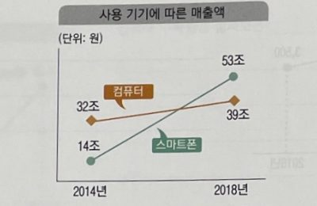
사용 기기에 따른 매출액 (2014 → 2018) — cả 2 đường đều đi lên, nhưng độ dốc khác hẳn nhau.
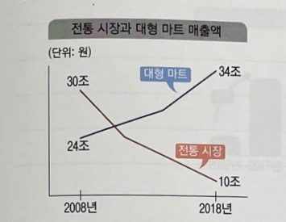
전통 시장과 대형 마트 매출액 (2008 → 2018) — 2 đường cắt nhau, 1 đi lên và 1 đi xuống.
Cả 2 đối tượng cùng tăng (hoặc cùng giảm), nhưng mức độ khác nhau rõ rệt.
| [Đối tượng 1]의 경우 | Năm 1 | 년에 | Số 1 | , | Năm 2 | 년에는 | Số 2 | (으)로 | Mức độ 1 | 증가한 | 반면, |
| [Đối tượng 2]은/는 | Năm 1 | 년에 | Số 1 | , | Năm 2 | 년에는 | Số 2 | (으)로 | Mức độ 2 | 증가하였다. |
| 컴퓨터의 경우 | 2014 | 년에 | 32조 원 | , | 2018 | 년에는 | 39조 원 | (으)로 | 소폭 | 증가한 | 반면, |
| 스마트폰은 | 2014 | 년에 | 14조 원 | , | 2018 | 년에는 | 53조 원 | (으)로 | 대폭 | 증가하였다. |
Ví dụ đã điền: Đối với máy tính, từ 32 nghìn tỷ won (2014) tăng nhẹ lên 39 nghìn tỷ won (2018), trong khi đó điện thoại thông minh lại từ 14 nghìn tỷ won tăng mạnh lên 53 nghìn tỷ won.
TRƯỜNG HỢP 2 — Ngược chiều nhau1 đối tượng tăng, đối tượng còn lại giảm — 2 xu hướng trái ngược hoàn toàn.
| [Đối tượng 1]의 경우 | Năm 1 | 년에 | Số 1 | , | Năm 2 | 년에는 | Số 2 | (으)로 | Mức độ 1 | 증가한 | 반면, |
| [Đối tượng 2]은/는 | Năm 1 | 년에 | Số 1 | , | Năm 2 | 년에는 | Số 2 | (으)로 | Mức độ 2 | 감소하였다. |
| 대형 마트의 경우 | 2008 | 년에 | 24조 원 | , | 2018 | 년에는 | 34조 원 | (으)로 | 소폭 | 증가한 | 반면, |
| 전통 시장은 | 2008 | 년에 | 30조 원 | , | 2018 | 년에는 | 10조 원 | (으)로 | 대폭 | 감소하였다. |
Ví dụ đã điền: Đối với siêu thị lớn, từ 24 nghìn tỷ won (2008) tăng nhẹ lên 34 nghìn tỷ won (2018), trong khi đó chợ truyền thống lại từ 30 nghìn tỷ won giảm mạnh xuống còn 10 nghìn tỷ won.
📌 Chú thích cột [Mức độ] — trường hợp nào dùng từ nào?
| Từ vựng (Hàn) | Khi nào dùng | Nghĩa tiếng Việt |
|---|---|---|
| 다소 | Khi mức tăng/giảm rất nhẹ, gần như không đáng kể — nhẹ hơn cả 소폭 | hơi, phần nào |
| 소폭 | Khi mức tăng/giảm nhẹ, ít | nhẹ, ít |
| 크게 | Khi mức tăng/giảm khá mạnh, rõ rệt — nhẹ hơn 대폭 một chút | khá mạnh, đáng kể |
| 대폭 | Khi mức tăng/giảm rất mạnh, nổi bật | mạnh, nhiều |
| 지속적으로 | Khi nhấn mạnh việc tăng/giảm diễn ra liên tục, không ngừng qua cả giai đoạn | liên tục, không ngừng |
Từ đồng nghĩa 증가하다: 늘어나다 · 상승하다 · 오르다/올라가다 · 늘다 · 확대되다 | Từ đồng nghĩa 감소하다: 줄어들다 · 하락하다 · 내려가다/떨어지다 · 줄다 · 축소되다
Dạng 4 — Bảng ô khung câu
Nhiều hạng mục cùng kỳ (기간별로 여러 항목을 비교할 때) — từ 3 hạng mục trở lên, cùng tăng hoặc cùng giảm trong cùng khoảng thời gian.
Dạng 4 — Nhiều hạng mục cùng kỳ: So sánh từ 3 hạng mục trở lên, tất cả cùng tăng hoặc cùng giảm trong cùng 1 khoảng thời gian — nêu đủ số liệu từng hạng mục rồi chỉ ra hạng mục thay đổi mạnh nhất.
Nhận diện bằng hình dạng biểu đồ: có từ 3 cụm cột trở lên, thường kèm chú thích màu (■A ■B ■C) để phân biệt từng hạng mục — mỗi cụm có 2 cột (mốc đầu/mốc cuối) và 1 nhãn tỉ lệ riêng.
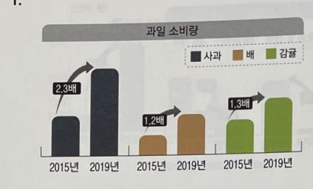
과일 소비량 (2015 → 2019) — 3 loại quả, mỗi loại 1 màu, đều tăng nhưng tỉ lệ khác nhau.
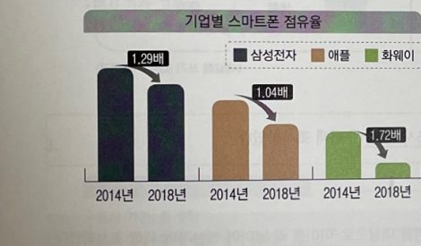
기업별 스마트폰 점유율 (2014 → 2018) — 3 hãng điện thoại, mỗi hãng 1 màu, đều giảm nhưng tỉ lệ khác nhau.
| [Chủ đề]을/를 살펴보면 | Khoảng năm |
간 | Hạng mục 1 | 은 | Số 1배 | , | Hạng mục 2 | 은 | Số 2배 | , | Hạng mục 3 | 은 | Số 3배 | 늘어난 것으로 나타났으며 |
| [Hạng mục cao nhất] 이/가 |
가장 높은 | 증가율을 보였다. | ||||||||||||
| 과일 소비량을 살펴보면 | 4년 | 간 | 사과 | 는 | 2.3배 | , | 배 | 는 | 1.2배 | , | 감귤 | 은 | 1.3배 | 늘어난 것으로 나타났으며 |
| 사과가 | 가장 높은 | 증가율을 보였다. | ||||||||||||
Ví dụ đã điền: Trong 4 năm, táo tăng 2,3 lần, lê tăng 1,2 lần, quýt tăng 1,3 lần — táo có tỉ lệ tăng cao nhất.
CẢ 3 HẠNG MỤC CÙNG GIẢM| [Chủ đề]을/를 살펴보면 | Khoảng năm |
간 | Hạng mục 1 | 은 | Số 1배 | , | Hạng mục 2 | 은 | Số 2배 | , | Hạng mục 3 | 은 | Số 3배 | 줄어든 것으로 나타났으며 |
| [Hạng mục thấp nhất] 이/가 |
가장 낮은 | 감소율을 보였다. | ||||||||||||
| 기업별 스마트폰 점유율을 살펴보면 |
4년 | 간 | 삼성전자 | 는 | 1.29배 | , | 애플 | 은 | 1.04배 | , | 화웨이 | 는 | 1.72배 | 줄어든 것으로 나타났으며 |
| 화웨이가 | 가장 높은 | 감소율을 보였다. | ||||||||||||
Ví dụ đã điền: Trong 4 năm, Samsung giảm 1,29 lần, Apple giảm 1,04 lần, Huawei giảm 1,72 lần — Huawei có tỉ lệ giảm cao nhất.
Lưu ý: khi đơn vị là độ (℃) hoặc % thay vì "배", đổi 늘어나다/줄어들다 thành 상승하다/하락하다 cho tự nhiên hơn (VD: "서울은 3.2℃ 상승한 것으로 나타났으며...").
Từ đồng nghĩa 늘어나다: 증가하다 · 상승하다 · 오르다/올라가다 | Từ đồng nghĩa 줄어들다: 감소하다 · 하락하다 · 내려가다/떨어지다
Dạng 5 — Bảng ô khung câu
Viết câu mở đầu khảo sát (조사 기관, 조사 대상 풀어 쓰기) — biến thông tin đầu đề thành 1 câu mở bài hoàn chỉnh.
Dạng 5 — Câu mở đầu khảo sát: Biến 3 thông tin câu hỏi khảo sát – cơ quan điều tra – đối tượng điều tra thành 1 câu mở đầu hoàn chỉnh. Thường là câu đầu tiên của bài 53.
Nhận diện: đề không có biểu đồ số liệu ở phần này — chỉ có khung chữ nhỏ ở góc trên, ghi rõ "조사 기관" (cơ quan điều tra) và có thể có thêm "조사 대상" (đối tượng điều tra).
Điểm mấu chốt: đề CÓ dòng "조사 대상" hay KHÔNG quyết định dùng khung nào — xem 4 khung bên dưới.
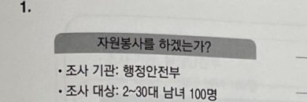
Đề có đủ "조사 기관" và "조사 대상" → dùng Khung GỐC (biến thể 1).
● 조사 기관: 산업경제연구소
Đề chỉ có "조사 기관", không có "조사 대상" → dùng 1 trong 3 khung biến thể.
Dùng khi đề có đủ cả "조사 기관" và "조사 대상".
| Cơ quan điều tra |
에서 | Đối tượng điều tra |
을/를 대상으로 |
'Nội dung khảo sát' |
에 대해 조사하였다. |
| 행정안전부 | 에서 | 2~30대 남녀 100명 |
을/를 대상으로 |
'자원봉사를 하겠는가' |
에 대해 조사하였다. |
Ví dụ đã điền: Bộ Hành chính và An toàn đã tiến hành khảo sát 100 nam nữ độ tuổi 20-30 về việc "có sẵn sàng làm tình nguyện hay không".
BIẾN THỂ 1 — đầy đủ, không đối tượngDùng khi đề chỉ có "조사 기관" (số liệu thống kê thuần túy, không khảo sát người trả lời).
| Cơ quan điều tra |
에서 | Chủ đề | 에 대해 조사한 자료에 따르면 |
| 한국관광공사 | 에서 | 한국 캠핑 인구의 변화 |
에 대해 조사한 자료에 따르면 |
Ví dụ đã điền: Theo tài liệu khảo sát của Tổng cục Du lịch Hàn Quốc về sự thay đổi dân số đi cắm trại của Hàn Quốc...
BIẾN THỂ 2 — ngắn gọn, không đối tượngCách viết ngắn gọn nhất — dùng khi không cần nhấn mạnh "theo tài liệu khảo sát".
| Cơ quan điều tra |
에서 | Chủ đề | 를 조사하였다. |
| 한국스포츠연구소 | 에서 | 인주시 마라톤 대회 참가자 수의 변화 |
를 조사하였다. |
Ví dụ đã điền: Viện Nghiên cứu Thể thao Hàn Quốc đã khảo sát sự thay đổi số người tham gia giải marathon thành phố Inju.
BIẾN THỂ 3 — gộp vào câu số liệu đầu tiênKhông tách câu riêng — gắn thẳng vào đầu câu mô tả số liệu chính (Dạng 1-4) luôn.
| Cơ quan điều tra |
의 조사에 따르면 |
... (câu số liệu chính, viết tiếp theo khung Dạng 1-4) |
| 산업경제연구소 | 의 조사에 따르면 |
대형 마트의 매출액은 2015년에 24조 2천억 원이었던 것이 2022년에... |
Ví dụ đã điền: Theo khảo sát của Viện Nghiên cứu Kinh tế Công nghiệp, doanh thu siêu thị lớn năm 2015 là 24 nghìn 2 trăm tỷ won...
🧭 Chọn khung nào? — tra nhanh
| Tình huống | Dùng khung |
|---|---|
| Đề có dòng "조사 대상" | Khung GỐC |
| Không có đối tượng, muốn viết câu mở đầy đủ, trang trọng | Biến thể 1 (~에 대해 조사한 자료에 따르면) |
| Không có đối tượng, muốn viết ngắn gọn | Biến thể 2 (~를 조사하였다) |
| Không có đối tượng, muốn gộp luôn vào câu số liệu đầu tiên | Biến thể 3 (~의 조사에 따르면) |
Dạng 6 — Bảng ô khung câu
Phân tích nội dung trả lời khảo sát (조사 질문에 대한 응답 내용을 분석할 때) — phần phức tạp nhất của câu 53, thường là câu cuối, đi sau câu mở đầu Dạng 5.
Dạng 6 — Phân tích nội dung trả lời: Xử lý 4 loại thông tin cùng lúc: tỉ lệ "그렇다" của 2 nhóm, tỉ lệ "아니다" của 2 nhóm, lý do "아니다" xếp hạng 1 của mỗi nhóm, và lý do xếp hạng 2 của mỗi nhóm — viết thành 4 câu nhỏ ghép lại.
Nhận diện: biểu đồ cột ngang, luôn có 2 màu đại diện 남/여 (hoặc 2 nhóm khác), kèm 1 bảng lý do xếp hạng 1위/2위 bên cạnh cho lựa chọn "아니다".
Điểm mấu chốt: giữ thứ tự đối tượng nhất quán xuyên suốt cả 4 câu (luôn nói 남 trước, 여 sau, hoặc ngược lại — chọn 1 thứ tự và giữ nguyên).
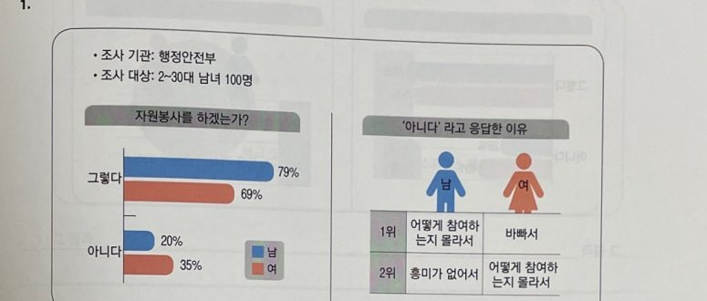
자원봉사를 하겠는가? — cột ngang 남/여 cho "그렇다/아니다" + bảng lý do xếp hạng 1위/2위 khi trả lời "아니다".
| 그 결과 '그렇다'라고 응답한 |
Đối tượng 1 | 은 | Số 1%, | Đối tượng 2 | 는 | Số 2%였다. |
| 그 결과 '그렇다'라고 응답한 |
남자 | 는 | 79%, | 여자 | 는 | 69%였다. |
| '아니다'라고 응답한 |
Đối tượng 1 | 은 | Số 1%, | Đối tượng 2 | 는 | Số 2%였다. |
| '아니다'라고 응답한 |
남자 | 는 | 20%, | 여자 | 는 | 35%였다. |
| '아니다'라고 응답한 이유에 대해 |
Đối tượng 1 | 은 | 'Lý do hạng 1 (ĐT1)', |
Đối tượng 2 | 는 | 'Lý do hạng 1 (ĐT2)'라고 응답한 경우가 가장 많았다. |
| '아니다'라고 응답한 이유에 대해 |
남자 | 는 | '어떻게 참여하는지 몰라서', |
여자 | 는 | '바빠서'라고 응답한 경우가 가장 많았다. |
| 이어 | Đối tượng 1 | 은 | 'Lý do hạng 2 (ĐT1)', |
Đối tượng 2 | 는 | 'Lý do hạng 2 (ĐT2)'라고 응답하였다. |
| 이어 | 남자 | 는 | '흥미가 없어서', |
여자 | 는 | '어떻게 참여하는지 몰라서'라고 응답하였다. |
Ghép cả 4 câu: Kết quả cho thấy tỉ lệ nam giới trả lời "Có" là 79%, nữ giới là 69%. Tỉ lệ nam giới trả lời "Không" là 20%, nữ giới là 35%. Về lý do trả lời "Không", nam giới trả lời nhiều nhất là "không biết cách tham gia", nữ giới trả lời nhiều nhất là "vì bận rộn". Tiếp theo, nam giới trả lời "vì không có hứng thú", nữ giới trả lời "không biết cách tham gia".
Dạng 7 — Bảng ô khung câu
Diễn giải nguyên nhân (이유에 대한 내용 풀어 쓰기) — viết 2 gạch đầu dòng ngắn gọn thành câu văn hoàn chỉnh.
Dạng 7 — Diễn giải nguyên nhân: Đề cho sẵn 2 gạch đầu dòng ngắn gọn (dạng từ khóa) làm lý do/nguyên nhân — nhiệm vụ là viết thành câu văn hoàn chỉnh, có động từ, có liên từ, không được chép nguyên cụm từ khóa vào bài.
Nhận diện: không có biểu đồ số liệu ở phần này — chỉ có khung chữ, tiêu đề "원인" hoặc "이유", bên trong đúng 2 gạch đầu dòng.
Có 4 cách viết: 3 cách gộp thành 1 câu (chỉ khác cụm mở đầu) và 1 cách tách thành 2 câu riêng dùng 첫째/둘째 — xem 4 khung bên dưới.
- 가족이나 이웃과의 교류 단절
- 경제적인 어려움
Đề chỉ cho từ khóa ngắn gọn như thế này — không được chép nguyên vào bài, phải viết lại thành câu hoàn chỉnh.
KHUNG A (GỐC) — 이와 같이 변화한 이유는| 이와 같이 변화한 이유는 |
Lý do 1 (viết thành câu) |
고, | Lý do 2 (viết thành câu) |
기 때문인 것으로 보인다. |
| 이와 같이 변화한 이유는 |
자전거 도로가 개발되고, |
고, | 자전거를 빌리는 곳이 확대되었기 |
기 때문인 것으로 보인다. |
Ví dụ đã điền: Như vậy, lý do thay đổi có vẻ là do đường dành cho xe đạp được phát triển và các điểm cho thuê xe đạp được mở rộng.
BIẾN THỂ 1 — 이러한 변화의 원인은| 이러한 변화의 원인은 |
Lý do 1 (viết thành câu) |
고, | Lý do 2 (viết thành câu) |
기 때문인 것으로 보인다. |
| 이러한 변화의 원인은 |
건강 관리에 대한 관심이 높아져 달리기 문화가 확산되었고, |
고, | SNS를 통한 마라톤 모임이 활성화되어 참가자가 증가하였기 |
기 때문인 것으로 보인다. |
Ví dụ đã điền: Nguyên nhân của sự thay đổi này có vẻ là do sự quan tâm đến sức khỏe tăng cao khiến văn hóa chạy bộ lan rộng, và các hội nhóm marathon qua mạng xã hội sôi động khiến người tham gia tăng lên.
BIẾN THỂ 2 — 이렇게 변화한 것은| 이렇게 변화한 것은 |
Lý do 1 (viết thành câu) |
고, | Lý do 2 (viết thành câu) |
때문으로 나타났다. |
| 이렇게 변화한 것은 |
캠핑 장비의 고급화와 대여료 증가로 경제력이 요구되었고, |
고, | 가족 단위 캠핑이 증가하였기 |
때문으로 나타났다. |
Ví dụ đã điền: Sự thay đổi này được cho là do thiết bị cắm trại ngày càng cao cấp và phí thuê tăng nên đòi hỏi điều kiện kinh tế, đồng thời việc cắm trại theo gia đình cũng tăng lên.
KHUNG B — tách 2 câu (첫째 / 둘째)| 이러한 [증가/감소]의 원인은 다음과 같다. | |||
| 첫째, | Lý do 1 (viết thành câu) | 둘째, | Lý do 2 (viết thành câu) |
| 이러한 증가의 원인은 다음과 같다. | |||
| 첫째, | 자전거 도로가 개발되면서 자전거를 이용하는 사람이 늘었다. | 둘째, | 자전거 빌리는 곳이 확대되면서 이용자 수 증가에 영향을 주었기 때문이다. |
Ví dụ đã điền: Nguyên nhân của sự gia tăng này như sau. Thứ nhất, đường dành cho xe đạp được phát triển khiến số người sử dụng xe đạp tăng lên. Thứ hai, các điểm cho thuê xe đạp được mở rộng đã góp phần làm tăng số người sử dụng.
🧭 Chọn khung nào? — tra nhanh
| Tình huống | Dùng khung |
|---|---|
| Câu nguyên nhân đứng riêng, có ý muốn nhấn mạnh "vẻ như là" | Khung A (gốc) — 이와 같이 변화한 이유는 |
| Nguyên nhân giải thích chung cho nhiều xu hướng vừa nêu (không chỉ 1 chiều) | Biến thể 1 — 이러한 변화의 원인은 |
| Muốn nối liền mạch ngay sau câu mô tả xu hướng/thứ hạng phía trước | Biến thể 2 — 이렇게 변화한 것은 |
| Muốn trình bày 2 lý do thật rõ ràng, tách bạch (văn phong liệt kê) | Khung B — 첫째 / 둘째 |
Dạng 8 — Bảng ô khung câu
Diễn giải kỳ vọng/dự đoán (기대·전망에 대한 내용 풀어 쓰기) — thường là câu kết của bài 53.
Dạng 8 — Diễn giải kỳ vọng/dự đoán: Đề có phần "기대" hoặc "전망" — 1 mốc tương lai cần viết thành câu dự đoán. Có 2 kiểu: dự đoán đạt đến 1 con số cụ thể, hoặc dự đoán 1 đối tượng sẽ vượt qua đối tượng kia.
Nhận diện: khung chữ tiêu đề "기대" hoặc "전망" — nếu bên trong chỉ có 1 số liệu + 1 năm → dùng Khung 1; nếu có dấu ">" so sánh 2 đối tượng → dùng Khung 2 (biến thể "vượt qua").
1인 가구 810만 가구
(2045년)
Chỉ có 1 số liệu + 1 năm → dùng Khung 1 (đạt đến con số).
2023년 매출액
편의점 > 대형마트
Có dấu ">" so sánh 2 đối tượng → dùng Khung 2 (vượt qua).
| 이러한 영향이 계속된다면 |
Năm | 년에는 | Nội dung 기대 (viết lại thành câu) |
을/를 것으로 기대된다(전망된다). |
| 이러한 영향이 계속된다면 |
2045 | 년에는 | 1인 가구가 810만 가구에 이를 |
것으로 기대된다. |
Ví dụ đã điền: Nếu ảnh hưởng này tiếp tục thì đến năm 2045, số hộ gia đình đơn thân được kỳ vọng sẽ đạt 8,1 triệu hộ.
KHUNG 2 — Vượt qua đối tượng khác| 이러한 추세라면 (이런 추세로 볼 때) |
Năm | 년에는 | Đối tượng A | 이/가 | Đối tượng B | 을/를 넘어설(앞지를) |
것으로 전망된다. |
| 이런 추세로 볼 때 |
2023 | 년에는 | 편의점의 매출액이 |
이/가 | 대형 마트를 | 넘어설 | 것으로 전망된다. |
Ví dụ đã điền: Với xu hướng này, dự đoán đến năm 2023 doanh thu cửa hàng tiện lợi sẽ vượt qua siêu thị lớn.
📌 Chú thích — dùng từ nào cho đúng ngữ cảnh?
| Từ vựng | Khi nào dùng | Nghĩa tiếng Việt |
|---|---|---|
| 기대된다 | Khi mốc đó là điều mong muốn, tích cực (đề ghi rõ "기대") | được kỳ vọng |
| 전망된다 | Trung tính hơn, dùng được cho cả xu hướng tăng lẫn giảm (đề ghi "전망") | được dự báo |
| ~에 이를 것으로 | Khi nội dung là 1 con số cụ thể (người, đồng, gia đình...) | sẽ đạt đến |
| ~%에 달할 것으로 | Khi đơn vị là % — tự nhiên hơn "이를 것으로" | sẽ đạt mức |
| 넘어서다 / 앞지르다 | Khi đề so sánh 2 đối tượng, dự đoán ai vượt ai (đồng nghĩa, dùng thay nhau được) | vượt qua |
Dạng 9 — Bảng ô khung câu
So sánh thứ hạng (순위 변화) — 2 hạng mục đổi vị trí 1위/2위 giữa 2 mốc thời gian.
Khi nào dùng dạng này? Khi đề cho một bảng xếp hạng (không phải biểu đồ số liệu) ở 2 mốc thời gian, và các hạng mục trong bảng đổi vị trí cho nhau. Dấu hiệu nhận diện: bảng có cột "1위" / "2위", mỗi cột ứng với 1 năm, cùng 2 hạng mục nhưng thứ tự khác nhau giữa 2 năm.
Phân biệt với Dạng 3: Dạng 3 so sánh số liệu (tăng bao nhiêu/giảm bao nhiêu). Dạng 9 so sánh vị trí/thứ hạng — không có con số tăng giảm, chỉ có "ai đứng trên, ai đứng dưới" và việc đó đổi chỗ qua 2 mốc thời gian.
| 2019년 | 2024년 | |
|---|---|---|
| 1위 | 20대~30대 | 40대~50대 |
| 2위 | 40대~50대 | 20대~30대 |
Tín hiệu: đúng 2 hạng mục xuất hiện ở cả 2 cột năm, nhưng đổi vị trí 1위/2위 cho nhau → chắc chắn là Dạng 9.
VẾ 1 — Mốc thời gian thứ nhất| 이를 [tiêu chí xếp hạng](으)로 보면 |
Năm 1 | 년에는 | Hạng mục A | 이/가 | 1위를 차지하였고 |
2위는 | Hạng mục B | (으)로 나타났다. |
| 이와 달리 | Năm 2 | 년에는 | Hạng mục B | 이/가 | 1위로 가장 많았고, |
2위는 | Hạng mục A | (으)로 나타났다. |
Dịch: Xét theo [tiêu chí xếp hạng] thì vào năm [năm 1], [hạng mục A] đứng vị trí số 1 và vị trí số 2 là [hạng mục B]. Ngược lại, đến năm [năm 2] thì [hạng mục B] lại vươn lên vị trí số 1 (chiếm tỉ lệ cao nhất), còn vị trí số 2 là [hạng mục A].
VÍ DỤ ĐÃ ĐIỀN — Dân số cắm trại theo độ tuổi| 이를 연령별 순위 변화로 보면 |
2019 | 년에는 | 20대~30대 | 가 | 1위를 차지하였고 |
2위는 | 40대~50대 | 로 나타났다. |
| 이와 달리 | 2024 | 년에는 | 40대~50대 | 가 | 1위로 가장 많았고, |
2위는 | 20대~30대 | 로 나타났다. |
Ví dụ đã điền: Xét theo sự thay đổi thứ hạng độ tuổi thì vào năm 2019, nhóm 20–30 tuổi đứng vị trí số 1 và vị trí số 2 là nhóm 40–50 tuổi. Ngược lại, đến năm 2024 thì nhóm 40–50 tuổi lại vươn lên vị trí số 1 (chiếm tỉ lệ cao nhất), còn vị trí số 2 là nhóm 20–30 tuổi.
📌 3 điểm ngữ pháp cần nhớ
| Từ vựng | Khi nào dùng | Nghĩa tiếng Việt |
|---|---|---|
| 1위를 차지하다 | Động từ chuyên dùng cho xếp hạng — không dùng 증가하다/감소하다 ở đây vì câu không nói về tăng/giảm số liệu. | chiếm vị trí số 1 |
| 이와 달리 | Bắt buộc phải có để thể hiện rõ sự đổi chỗ giữa 2 mốc thời gian; gần giống vai trò của "반면" ở Dạng 3 nhưng dùng riêng cho ngữ cảnh xếp hạng. | khác với điều đó / ngược lại |
| 1위로 가장 많았고 | Ở vế mốc thứ 2, khi hạng mục mới vươn lên số 1 — cân đối với vế đầu "1위를 차지하였고" (cả 2 vế đều nhấn mạnh "chiếm tỉ lệ cao nhất"), tránh câu bị cụt khi chỉ nối bằng dấu phẩy. | đứng số 1, nhiều nhất |
Vị trí của Dạng 9 trong 1 bài 53 hoàn chỉnh: Dạng 9 thường là câu mô tả số liệu chính thứ 2 (sau 1 câu Dạng 1 mô tả tổng quan), rồi tiếp đến câu Dạng 7 (nguyên nhân) nếu đề có.
Cấu trúc đầy đủ: Dạng 5 (mở đầu) → Dạng 1 (tổng quan) → Dạng 9 (chi tiết theo thứ hạng) → Dạng 7 (nguyên nhân).
Dạng 10 — Bảng ô khung câu
Biểu đồ tròn — tỉ lệ các lựa chọn (응답 비율), kèm 2 khung phụ: lý do “không …” và biện pháp xử lý.
Khi nào dùng dạng này? Đề cho biểu đồ tròn (hoặc 1 cột chia phần) thể hiện 1 lần khảo sát, 1 nhóm người, chia thành nhiều lựa chọn có tỉ lệ % cộng lại thành 100%.
Phân biệt: Dạng 1–4 và Dạng 9 cần 2 mốc thời gian (tăng/giảm, đổi hạng). Dạng 6 có 2 nhóm (남/여) so sánh với nhau. Dạng 10 không có thời gian, chỉ 1 nhóm — việc cần làm là xếp các lựa chọn từ lớn đến nhỏ.
Thứ tự bài thường gặp: Dạng 5 (mở đầu, có 조사 대상) → Dạng 10 — biểu đồ tròn → Khung 2 — lý do “không …” → Khung 3 — biện pháp.
- 착용 55%
- 상황에 따라 착용 20%
- 미착용 10%
- 기타 5%
조사기관: 정부 · 조사대상: 내국인 1000명 → câu mở đầu dùng Dạng 5 (Khung gốc). Đề này các phần chỉ cộng được 90% — cứ viết đúng số trên đề.
- 답답함
- 화장 때문
- 벌금 부과
- 대중교통 이용 불가
2 khung chữ đi kèm → Khung 2 (lý do) và Khung 3 (biện pháp).
| 그 결과 | 'Lựa chọn 1' | (이)라고 응답한 사람이 |
N% | 로 가장 많았고, | 이어서 | 'Lựa chọn 2' | 가 | N%, | 'Lựa chọn 3' | 가 | N% | 로 나타났다. |
| 그 결과 | '착용한다' | 라고 응답한 사람이 |
55% | 로 가장 많았고, | 이어서 | '상황에 따라 착용한다' |
가 | 20%, | '착용하지 않는다' |
가 | 10%, | '기타' | 가 | 5% | 로 나타났다. |
Ví dụ đã điền: Kết quả cho thấy số người trả lời “có đeo” nhiều nhất với 55%, tiếp theo là “đeo tùy tình huống” 20%, “không đeo” 10%, “khác” 5%.
KHUNG 2 — Lý do “không …” (미착용 이유, 반대 이유…)Không dùng “이와 같이 변화한 이유는” của Dạng 7 — ở đây không có sự thay đổi nào, chỉ là lý do của những người trả lời “không”.
| [Hành động]-지 않는 이유로는 |
'Lý do 1' | (이)라는 응답과 | 'Lý do 2' | (이)라는 | 응답이 있었다. |
| 마스크를 착용하지 않는 이유로는 |
'답답하다' | 라는 응답과 | '화장 때문' | 이라는 | 응답이 있었다. |
Ví dụ đã điền: Về lý do không đeo khẩu trang, có ý kiến trả lời “ngột ngạt” và ý kiến “vì trang điểm”.
Cách viết khác (đổi từ khóa thành mệnh đề, như Dạng 7): 마스크를 착용하지 않는 이유는 답답하고 화장이 지워지기 때문인 것으로 나타났다.
KHUNG 3 — Biện pháp xử lý (대응 방안 / 해결 방안)Đổi từng từ khóa thành mệnh đề (부과 → 부과되다, 불가 → 할 수 없다), mở bằng 한편 hoặc 또한.
| 한편 | [Tình huống] | -(으)ㄹ 경우에는 | Biện pháp 1 (mệnh đề) |
-고 | Biện pháp 2 (mệnh đề) |
-는 것으로 나타났다. |
| 한편 | 마스크를 착용하지 않을 | 경우에는 | 벌금이 부과되 | 고 | 대중교통을 이용할 수 없 | 는 것으로 나타났다. |
Ví dụ đã điền: Mặt khác, trường hợp không đeo khẩu trang sẽ bị phạt tiền và không được sử dụng phương tiện giao thông công cộng.
Cách viết khác: 이에 대한 대응 방안으로는 벌금 부과와 대중교통 이용 제한이 있다. (giữ danh từ, nối bằng 와/과 — ngắn hơn, dùng khi bài đã đủ chữ)
📌 Điểm cần nhớ
| Từ vựng / mẫu | Khi nào dùng | Nghĩa tiếng Việt |
|---|---|---|
| N%로 가장 많았고 | Chỉ dùng cho lựa chọn lớn nhất. Các lựa chọn sau nối bằng 이어서, đi từ lớn đến nhỏ, không đảo thứ tự. | nhiều nhất với N% |
| '…'라고 응답한 | Viết lựa chọn thành lời người trả lời trong dấu ' ': 착용 → '착용한다', 미착용 → '착용하지 않는다', 찬성 → '찬성한다'. | trả lời là “…” |
| 기타 | Luôn để cuối cùng; thiếu chữ thì có thể bỏ, thừa chữ thì giữ. | khác |
| -지 않는 이유로는 | Lý do của câu trả lời “không …” — không dùng “변화한 이유는” vì không có thay đổi. | lý do không … |
| -(으)ㄹ 경우(에는) | Nêu tình huống trước biện pháp/hậu quả. | trong trường hợp … |
Bài mẫu hoàn chỉnh (khoảng 230 chữ):
정부에서 내국인 1,000명을 대상으로 마스크 착용 현황에 대해 조사하였다. 그 결과 '착용한다'라고 응답한 사람이 55%로 가장 많았고, 이어서 '상황에 따라 착용한다'가 20%, '착용하지 않는다'가 10%, '기타'가 5%로 나타났다. 마스크를 착용하지 않는 이유로는 '답답하다'라는 응답과 '화장 때문'이라는 응답이 있었다. 한편 마스크를 착용하지 않을 경우에는 벌금이 부과되고 대중교통을 이용할 수 없는 것으로 나타났다.
Cấu trúc: Dạng 5 (Khung gốc) → Dạng 10 Khung 1 → Khung 2 → Khung 3.
Nguồn tham khảo: Cool-Topik-쓰기.
Buổi 1 · Mảnh → mệnh đề
Mục tiêu: nhìn một mảnh trong khung 원인 / 전망 / 방안 là biết nó thiếu gì, rồi thêm đúng tiểu từ + động từ để thành mệnh đề có đuôi -다. Đây là gốc của cả Buổi 2 và Buổi 3.
1. Vì sao phần này hay bị mất điểm?
Phần số liệu, đề cho số, em ghép vào khung. Còn khung 원인 · 전망 · 방안 thì đề chỉ ghi mảnh rút gọn như ghi chú: bỏ tiểu từ, bỏ động từ, dùng mũi tên. Chép nguyên mảnh vào bài → câu thiếu động từ, thiếu tiểu từ → mất điểm ngữ pháp.
| Đề cho | Chép nguyên (sai) | Viết đúng |
|---|---|---|
| 편의점 수↑ | 편의점 수↑ 때문이다 | 편의점 수가 증가했기 때문이다 |
| 소포장 상품 수요 증가 | 소포장 상품 수요 증가했기 때문이다 | 소포장 상품의 수요가 증가했기 때문이다 |
| 경제력이 요구됨 | 경제력이 요구됨 때문이다 | 경제력이 요구되었기 때문이다 |
| 2040년 1인 가구 43% 이상 | 2040년 1인 가구 43% 이상이다 | 2040년에는 1인 가구가 43% 이상이 될 것으로 전망된다 |
2. Bước 1 — Khoanh chữ cuối của mảnh: mảnh thuộc dạng nào?
| Dạng | Chữ cuối của mảnh | Ví dụ trong đề | Em phải thêm |
|---|---|---|---|
| ① N + mũi tên | ↑ ↓ | 20대 독립↑ · 편의점 수↑ · 관심↑ | 이/가 + động từ tăng/giảm (Bước 3) |
| ② N + chữ Hán chỉ biến đổi | 증가, 감소, 확산, 활성화, 향상, 개선, 단절, 확대… | 소포장 상품 수요 증가 · 달리기 문화 확산 | 이/가 hoặc 을/를 + 하다/되다 (Bước 2) |
| ③ Đã có vị ngữ | -ㅁ/-음, tính từ | 경제력이 요구됨 · 취업에 유리함 · 기회가 많음 | chỉ đổi đuôi: 요구됨 → 요구되다, 유리함 → 유리하다 |
| ④ Chỉ có danh từ | không có chữ biến đổi nào | 성적 스트레스 · 바가지 요금 · 경제적인 어려움 | tự thêm động từ hợp nghĩa: 스트레스를 받다, 요금을 받다, 어려움을 겪다 |
| ⑤ Năm + số / dấu > | 년, %, 명, 원, > | 2040년 1인 가구 43% 이상 · 편의점 > 대형 마트 | động từ tương lai: 이르다, 달하다, 되다, 넘어서다 (Buổi 3) |
Đi thi: lấy bút khoanh chữ cuối cùng của từng mảnh. Chữ đó quyết định em phải thêm gì.
3. Bước 2 — Câu hỏi vàng: “Tự xảy ra hay có người làm?”
Nhiều chữ Hán (확대, 개선, 활성화…) đi được với cả 하다 lẫn 되다. Em không cần thuộc từng từ, chỉ hỏi một câu:
Tự xảy ra → N이/가 + 되다
Ô 원인 (đã xảy ra), ô 전망 (sẽ xảy ra).Có người làm → N을/를 + 하다
Ô 방안 · 과제 · 대책 (ai đó phải làm).| Nhóm | Từ hay gặp | Viết |
|---|---|---|
| A — chỉ dùng 하다, không có tân ngữ | 증가, 감소, 상승, 하락, 변화, 성장, 발전 | 수요가 증가하다 수요를 증가하다 |
| B — có cặp 하다 / 되다 | 확대, 개선, 활성화, 강화, 마련, 개발, 보급, 확충, 해소, 단절 | tự xảy ra: 이/가 + 되다; người làm: 을/를 + 하다 |
| C — trong câu 53 gần như luôn 되다 | 확산, 향상, 요구, 고급화, 다양화 | 문화가 확산되다 · 경제력이 요구되다 |
4. Bước 3 — Mũi tên ↑ / ↓ đổi thành động từ nào?
| Danh từ chỉ… | ↑ | ↓ | Ví dụ |
|---|---|---|---|
| số lượng: 수, 인구, 가구, 이용자, 매출액 | 증가하다 · 늘어나다 · 늘다 | 감소하다 · 줄어들다 · 줄다 | 노인 가구↑ → 노인 가구가 증가하다 |
| mức độ: 관심, 비율(-율), 인식, 수준, 만족도 | 높아지다 · 상승하다 | 낮아지다 · 하락하다 | 관심↑ → 관심이 높아지다 |
| quy mô / gánh nặng: 규모, 부담, 시장 | 커지다 · 확대되다 | 작아지다 · 축소되다 | 부담↑ → 부담이 커지다 |
| một việc nhóm người làm: 20대 독립 | -하는 N이 늘어나다 | -하는 N이 줄어들다 | 20대 독립↑ → 독립하는 20대가 늘어나다 |
Không chắc thì dùng 증가하다 / 감소하다 — đúng với hầu hết danh từ chỉ số lượng.
5. Bước 4 — Mảnh đã bỏ tiểu từ, em phải trả lại
- Chủ ngữ thêm 이/가: 수요 증가 → 수요가 증가하다.
- Hai danh từ đứng sát nhau thường thêm 의 (bỏ cũng được): 소포장 상품 수요 → 소포장 상품의 수요.
- Phần đề đã có tiểu từ thì giữ nguyên, chỉ thêm ở cuối: 건강 관리에 대한 관심이 · 가족이나 이웃과의 교류가.
- Ô 방안: tân ngữ thêm 을/를: 지원 확대 → 지원을 확대하다.
6. Em thử — nhận diện
7. Em thử — viết mảnh thành mệnh đề
Viết mệnh đề đuôi -다 (hoặc quá khứ -았/었다), bấm “Kiểm tra”. Sai 2 lần sẽ hiện đáp án.
Buổi 2 · Nguyên nhân (원인 · 이유)
Mục tiêu: biến 1–2 mảnh nguyên nhân thành một câu đúng khung: 이러한 변화의 원인은 … -기 때문인 것으로 보인다.
1. Ô nguyên nhân trong bài 53 (đề thật kỳ 96)
건강 관리에 대한 관심↑ → 달리기 문화 확산
SNS를 통한 마라톤 모임 활성화 → 20~30대 참가자↑
2. Quy trình 4 bước
- Khoanh chữ cuối từng mảnh → dạng ①–④ (Buổi 1).
- Viết mỗi mảnh thành mệnh đề -다: thêm 이/가 + động từ.
- Nối theo ký hiệu: → thành -아/어(서) hoặc -(으)면서; hai gạch đầu dòng thành -고 (hoặc 첫째, 둘째).
- Lắp vào khung mở – kết. Kiểm tra: 원인은 … 때문이다 khớp nhau, đuôi -다.
3. Ký hiệu trong đề → từ nối
| Đề ghi | Nghĩa | Nối bằng | Ví dụ |
|---|---|---|---|
| A → B | A dẫn đến B | A-아/어(서) B · A-(으)면서 B | 편의점 수가 증가하여 고객 접근성이 향상되었다 |
| A / B (hai gạch) | hai nguyên nhân ngang nhau | A-고 B · 첫째, A. 둘째, B. | 교류가 단절되고 경제적인 어려움을 겪는… |
| A와 B → C | hai danh từ cùng gây ra C | A와 B(으)로 인해 C | 장비의 고급화와 대여료 증가로 인해 경제력이 요구되었다 |
Văn viết hay bỏ 서: 증가하여, 높아져, 활성화되어. Muốn giữ nguyên danh từ thì dùng (으)로 인해; muốn dùng -아/어서 thì mảnh phải thành mệnh đề có động từ trước.
4. 때문 hay 기 때문? — chỗ sai nhiều nhất
| Ngay trước là… | Dùng | Ví dụ |
|---|---|---|
| động từ / tính từ (mệnh đề) | -기 때문이다 · -았/었기 때문이다 | 수요가 증가했기 때문이다 |
| danh từ | 때문이다 · (으)로 인한 것이다 | 경제적인 어려움 때문이다 |
5. Khung câu nguyên nhân
| Mở câu | Kết câu |
|---|---|
| 이러한 변화의 원인은 | … -기 때문인 것으로 보인다. |
| 이와 같이 변화한 이유는 | … -기 때문인 것으로 보인다. |
| 이렇게 변화한 것은 | … -기 때문으로 나타났다. |
| 이러한 변화는 | … -(으)ㄴ 결과로 보인다. (đề kỳ 83) |
| 이러한 증가의 원인은 다음과 같다. | 첫째, … -기 때문이다. 둘째, … -기 때문이다. |
6. Em thử — nhận diện
7. Viết câu nguyên nhân
Mỗi đề: Bước 1 viết từng mảnh thành mệnh đề (máy chấm). Bước 2 viết cả câu, bấm “So với câu mẫu”: chữ tô vàng là chỗ em viết khác, chữ tô xanh là chỗ câu mẫu có mà em thiếu. Viết khác câu mẫu vẫn có thể đúng — em tự chấm.
Buổi 3 · Triển vọng (전망 · 기대) và Phương án (방안 · 과제)
Mục tiêu: viết câu dự đoán từ một mốc tương lai, viết câu đề xuất từ khung 방안 — và không nhầm với câu nguyên nhân.
1. Ba ô, ba “thời gian” khác nhau
Cùng một mảnh 인식 개선 nhưng nằm ở ô khác nhau thì viết khác nhau:
| Ô | Chuyện gì? | Mệnh đề | Câu |
|---|---|---|---|
| 원인 · 이유 | đã xảy ra | 인식이 개선되다 | 인식이 개선되었기 때문이다 |
| 전망 · 기대 · 예상 | sẽ xảy ra | 인식이 개선되다 | 인식이 개선될 것으로 전망된다 |
| 방안 · 과제 · 대책 | người phải làm | 인식을 개선하다 | 인식을 개선해야 한다 |
Chỉ ô 방안 đổi sang 을/를 + 하다, vì có người (정부, 기업, 개인, 사회) phải làm.
2. Triển vọng: mảnh → động từ tương lai
| Đề cho | Động từ | Câu mẫu |
|---|---|---|
| năm + số (người, hộ, tiền) | N에 이르다 | 2045년에는 1인 가구가 810만 가구에 이를 것으로 전망된다. |
| năm + % | N에 달하다 · N을/를 차지하다 | 2024년에는 온라인 쇼핑 매출액이 56.2%에 달할 것으로 전망된다. |
| số + 이상 | N 이상이 되다 · N을/를 넘다 | 2040년에는 1인 가구가 43% 이상이 될 전망이다. (kỳ 83) |
| A > B | A이/가 B을/를 넘어서다 · 앞지르다 | 2023년에는 편의점의 매출액이 대형 마트를 넘어설 것으로 전망된다. (kỳ 91) |
| ↑ / ↓ (không có số) | 계속 증가하다 · 감소하다 | 앞으로도 이용자 수가 계속 증가할 것으로 예상된다. |
Mở câu: 이러한 추세가 계속된다면 · 이런 추세로 볼 때 · 이러한 영향이 계속된다면
Kết câu: -(으)ㄹ 것으로 전망된다 (trung tính) · 기대된다 (điều tốt, đề ghi 기대) · 예상된다 · -(으)ㄹ 전망이다
3. Phương án: “ai đó phải làm”
Khung 방안 · 과제 · 대책 · 해결 방안 thường có 2 mảnh kiểu 정부 지원 확대. Đây là việc phải làm → trả 을/를, dùng 하다, kết bằng -아/어야 하다 hoặc -(으)ㄹ 필요가 있다.
| Đề cho | Mệnh đề (người làm) |
|---|---|
| 정부 지원 확대 | 정부가 지원을 확대하다 |
| 안전 교육 강화 | 안전 교육을 강화하다 |
| 관련 법 마련 | 관련 법을 마련하다 |
| 일회용품 사용 줄이기 | 일회용품 사용을 줄이다 |
| Khung câu phương án |
|---|
| 이러한 문제를 해결하기 위해서는 A-고 B-아/어야 할 것이다. |
| 이를 위해서는 첫째, A-아/어야 하며, 둘째, B-(으)ㄹ 필요가 있다. |
| 따라서 A-고 B-는 노력이 필요하다. |
Bốn đề thật trong ngân hàng (kỳ 83, 91, 96, 102) chưa có ô phương án, nên các đề phương án dưới đây là câu tự soạn theo kiểu đề.
4. Em thử — nhận diện
5. Viết câu triển vọng
6. Viết câu phương án
Luyện viết · gửi cô chấm
Nguồn tham khảo: Cool-Topik-쓰기.
Bảng tra · ôn nhanh
Mảnh → em phải thêm gì?
| Mảnh | Thêm | Ví dụ |
|---|---|---|
| ① N↑ / N↓ | 이/가 + động từ tăng/giảm | 관심↑ → 관심이 높아지다 |
| ② N + 증가/확산/개선… | 이/가 + 하다/되다 (ô 방안: 을/를 + 하다) | 문화 확산 → 문화가 확산되다 |
| ③ -ㅁ/-음 | đổi đuôi | 요구됨 → 요구되다 |
| ④ chỉ danh từ | động từ hợp nghĩa | 어려움 → 어려움을 겪다 |
| ⑤ năm + số / > | động từ tương lai | 43% 이상 → 43% 이상이 될 것으로 |
하다 hay 되다?
| Nhóm A: chỉ 하다 (이/가) | 증가 · 감소 · 상승 · 하락 · 변화 · 성장 · 발전 |
|---|---|
| Nhóm B: tự xảy ra 이/가 + 되다 · người làm 을/를 + 하다 | 확대 · 개선 · 활성화 · 강화 · 마련 · 개발 · 보급 · 확충 · 해소 · 단절 |
| Nhóm C: 이/가 + 되다 | 확산 · 향상 · 요구 · 고급화 · 다양화 |
↑ / ↓
| Số lượng | 증가하다 · 늘어나다 / 감소하다 · 줄어들다 |
|---|---|
| Mức độ, tỉ lệ, quan tâm | 높아지다 · 상승하다 / 낮아지다 · 하락하다 |
| Quy mô, gánh nặng | 커지다 · 확대되다 / 작아지다 · 축소되다 |
Ký hiệu → từ nối
| A → B | A-아/어(서) B · A-(으)면서 B |
|---|---|
| A / B | A-고 B · 첫째 … 둘째 … |
| A와 B → C | A와 B(으)로 인해 C |
| A > B | A이/가 B을/를 넘어서다 · 앞지르다 |
Ba ô, ba đuôi câu
| 원인 · 이유 | 이러한 변화의 원인은 … -기 때문인 것으로 보인다. |
|---|---|
| 전망 · 기대 | 이러한 추세가 계속된다면 [năm]에는 … -(으)ㄹ 것으로 전망된다(기대된다). |
| 방안 · 과제 | 이러한 문제를 해결하기 위해서는 … 을/를 -아/어야 할 것이다. |
Kiểm tra trước khi nộp
- Mỗi mảnh đã có động từ chưa? Không còn ↑ ↓ > trong bài.
- Chủ ngữ có 이/가; ô 방안 có 을/를.
- 원인은 / 이유는 … kết bằng 때문이다; trước 때문 là động từ thì có -기.
- Câu dự đoán có -(으)ㄹ 것으로; câu phương án có -아/어야 hoặc 필요가 있다.
- Đuôi -다, không 요, không 습니다; không viết tiêu đề; 200–300 chữ.